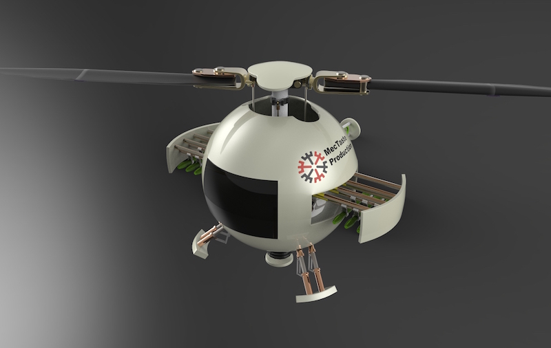

MotionGen has two functionalities: synthesis and simulation. As long as we have known, this is the only inverse kinematics linkage design app on both app store and google play store. The first version presents both functions on one screen because we were focusing on bigger screens such as iPad, PC and Web. This design gives user more choices that they can easily switch into any modes based on different tasks. You can find the 1.0 version in app store and google play store at Official Site.
From users' feedback and our observation, we knew that a lot of people used smaller devices such as phones or other android touchpads because they are easy to carry. It was clearly that the previous design left less usable areas on the screen. Some devices could not even handle an effective two-finger movement. We also found that most users only used one function for a specific given task. Therefore we separated the two and redesigned the animation of the panels to hide or pop out buttons based on the procedures in the linkage design. This new design will take most use of the smaller screens and simplify the design procedures to provide a smoother, more intuitive and professional design experience.
The project was started in late of 2012. I was the only person developing this app for iOS devices with the support of Stony Brook University. After the first version being released and a few conferences, we added a couple of team members to polish the app, extend the functionalities and develop android and web app. Thanks to many talented team members, it has now been very well developed and more functionalities are added.
Here is a demonstration on how MotionGen (Ver. 1.0) works to solve a four bar synthesis problem by Matthew Fink.
...and the other features of MotionGen.
MotionGen was featured in TED talk on Machine Design Innovation through Technology and Innovation 2014. (Demonstration at 13:38min)
The app had also helped in designing the sit-to-stand linkage system of the prototype of a patent protected mobility assist chair developed by Professor Anurag Purwar and Biodex Medical Systems. Relative information about the device can be found here.
We presented a poster demonstrating the perfect combination of research and its industrial application in a conference at the first stage of the app development.
This is the 2016 poster we presented to show our recent research on the theoretical foundation that will be applied to future versions of the app.
The success of the app should be acknowledged to sponsors and everyone in the team:
I’ve always been a fan of robots. This website interface is designed for the presentation of my robot concept in Design 4 Autodesk Contest. It is modeled with Autodesk Fusion 360 and rendered by Keyshot. The general idea is to design a robot that can transform from a regular geometry into a functional machine. In certain situations, it shrinks into a sphere to roll at a faster speed to reach to the designated position and expands to a robot afterward.
This robot won me a prize from Autodesk and further brought me a promotion to be entitled with an Autodesk Student Expert since November 2015. The Autodesk® Education Expert Network (now moved to Autodesk Design Academy) is to enable students, educators, alumni, and partners to showcase their portfolios, support design, testing and connect with the larger design community and industry.
It has also been chosen as one of possible proposal projects for transformation devices by School of Mechanical Engineering in Hefei University of Technology.

This is the 2nd team member in this series, an airborne early warning and control system.
In a real combat, it transforms into a helicopter with two blade propeller on the top and a two small propellers on the tail. The role for the airborne early warning is to take control of the whole battle and provide tactical guidance to the other team members, e.g. map of terrain, location of enemies, best path and prediction.
We designed this NYC Taxi Trip Information Predict Web for a data science project of my colleague. I took part in developing the site navigation method and graphics, layouts, interactive components and visual style. Front-end pages are mainly coded in Polymer, Html and CSS and the data is visualized in Javascript library - MapBox.js.
This web application analyzes one billion taxi trip data in New York City and takes the advantage of machine learning technology to predict trip information based on user input such as date, time of day, pick-up and drop-off locations. There are other useful statistics that can be referred to.
The design of interface is focused on simplicity and intuitiveness. It needs to be self-explained and fast responsive. Another requirement is to provide as much as visual data on the screen as possible. Therefore we used drop-down menu even its a large screen web application. We tried not to distract users from other information. But they can also easily switch to any part of the functions easily by as less as only one or two clicks. We minimized the number of text information on the screen and tried hard to use as many as visual information to present data. We knew people using this web mostly want to have a broad view of the time and get the relative information. Thus this information is visualized in almost all pages to save the time of users. There are more functions in this web application that can be explored.